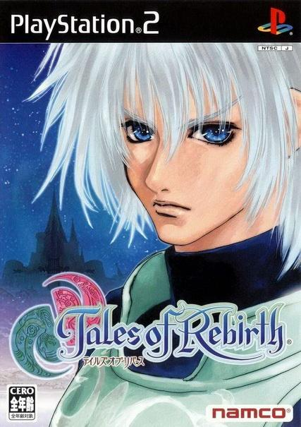

テイルズオブリバース
 2004年3月19日発売プラットフォーム：PS2 , PSP
シリーズ第6作目。
本作では第1作目から用いられてきた術技を使用する為のポイント“TP”が廃止され、“FG”という新たなパラメータに置き換わっている。また、“RG”と呼ばれるパラメータの追加など、戦闘システムの変更がみられる。
本作は人種・民族間の問題を架空の種族“ヒューマ”と“ガジュマ”を用いて表現している。また主人公が他作品と比べ落ち着いた性格をしていることも相まって、今までの少年漫画的な冒険活劇よりも暗めなストーリーとなっている。加えて、本作はヒロインが非戦闘員のためか、主人公がヒロインの安否を気にする描写が他よりも多く見受けられる。